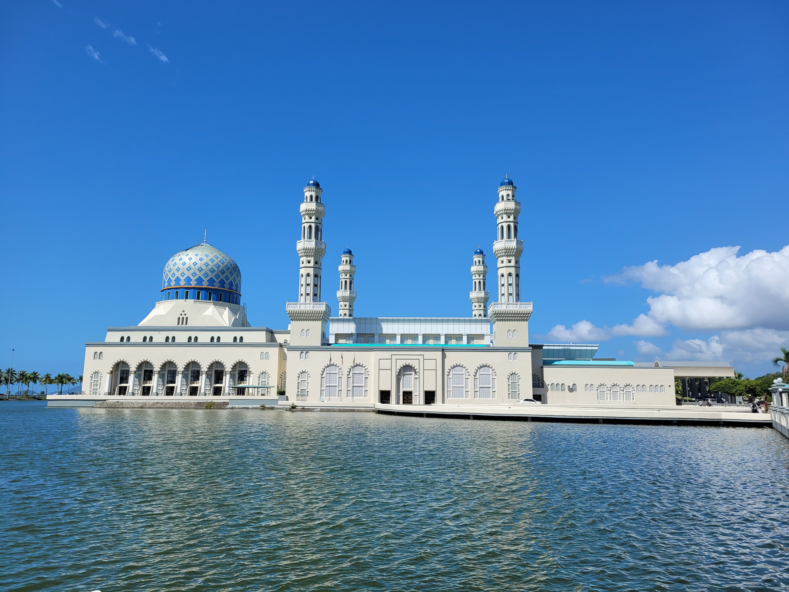

Go Back
Kota Kinabalu

Kota Kinabalu serves as one of the main access points to Malaysian Borneo. It's the largest city in the Sabah province and is a cool place to visit. Among the largest attractions are the nearby islands which offer good snorkeling and water activities and Mount Kinabalu which is the largest mountain on Borneo and one of the largest East of the Himalayas. What surprised me was the fun nightlife scene along the waterfront and the excellent food options. Kota Kinabalu is a cool place to visit. Here are some of my favourite activities.
There are many islands that are easily accessible from the Jesseltown Pier right in downtown Kota Kinabalu. The price for a return trip on a boat was 30 ringit which is less than 7 usd. We chose to go to Manukan Island but other popular options are Sapi Island and Gaya Island. They are a group of beautiful tropical islands that take about 15-20 minutes to get to. It was our first introduction to the beautiful nature present on this island. You can rent equipment such as snorkels and go snorkeling at the islands. They also offer different water activities such as walking on the water floor.
Mount Kinabalu is best accessed from Kota Kinabalu. It took us about 2 hours to get there on our rented motorbike. Looking back perhaps taking a bus would be a better option as it can get extremely hot during the daytime and the road is long and bumpy. However we made it and were able to visit the Botanic Garden and do one of the trails. It's a beautiful drive which reminded me a bit of Ha Giang in Northern Vietnam. Mount Kinabalu is towering and is very picturesque especially when spotted along the drive from one of several viewpoints. In the national park we saw more plantlife than anything. There were some very interesting types of flora that I've never seen and that are endemic to the island. The one picture below is Nepenthes rajah.
The Kota Kinabalu City Mosque is a picturesque mosque near the downtown area surrounded by a moat. It only cost 5 ringit to visit and an extra 5 ringit to borrow a Thawb (traditional arab clothing for men). Women are also required to borrow a hijab and wear the traditional dress. You can walk around the moat/ pond for the best views of the mosque then enter and see the inside of it. There is a prayer room in the back which is only for muslims to enter but you can basically explore everywhere else in the mosque.
Tanjung Aru Beach was a beach area just South of the city center. It's a nice beach to visit in the city. There are gazebos just back from the shore under trees where families and groups of friends like to hangout. Possibly the best part about the beach is the big food market area. There are plenty of restaurants serving delicious dishes like bakso soup and Ayam Geprek (fried chicken with spicy chili sauce). We also found a viewpoint which doesn't really have a name but is on the maps.me app. You have to drive through a floating village to arrive at the viewpoint which is basically at the end of the long pier. It was fascinating to see how the local people live on the water and a great spot to watch the sunset.
The food in Kota Kinabalu was great. We stayed at the Api-Api center which is a huge apartment complex that spans several blocks right in downtown KK. There are dozeons of restaurants spread throughout this building and is where we did a lot of our eating. Some popular dishes in Borneo are bakso which is a soup served with thin noodles and some sort of combination of meat. They also have fantastic fried chicken in dishes like ayam geprek or ayam penyet. Some great restaurants include Jothy's Fish Head Curry Banana Leaf, Restoran Rasika Maja and Restoran Nasantara 2. Just nearby on the waterfront next to the main bar area there is a sprawling market that sells everything from fresh fruit to raw meat and cooked meat ranging from beef to seafood of all sorts. There is plenty of delicious food to be had here!
I recommend staying in the city center area of Kota Kinabalu while here. We stayed at the Api-Api Center which was a great location and had many awesome restaurants in it. The center of the city is walkable, interesting and bustling yet calm. There is a fun strip of restaurant/ bars along the waterfront where it's popular for people to enjoy a drink while watching live music and the sunset. It's also the area with the most tourist infrastructure so it's easy to find things like motorbike rentals and tours. I recommend checking on airbnb for a place here. We found the value to be excellent as we paid 110 usd for 4 nights in a 1 bedroom apartment with a full kitchen, living room and balcony. If this is split between two people that's only 55 usd for 4 nights in a comfortable airbnb that is walkable to anywhere in the city center. There is also plenty of street art such as the columns which have now been decorated with various sculptures of marine animals like the whale shark shown below.